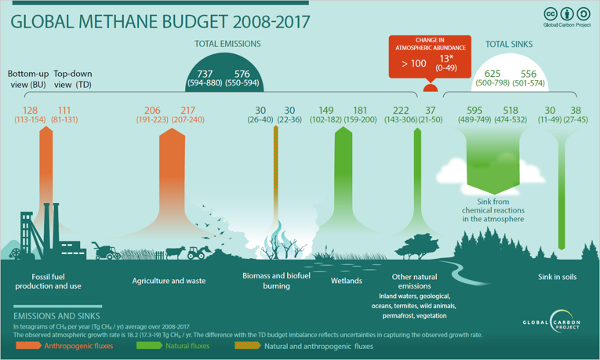
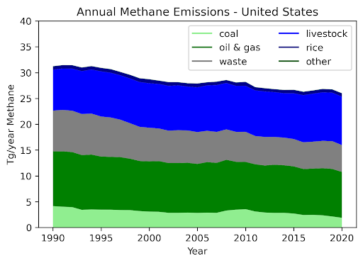
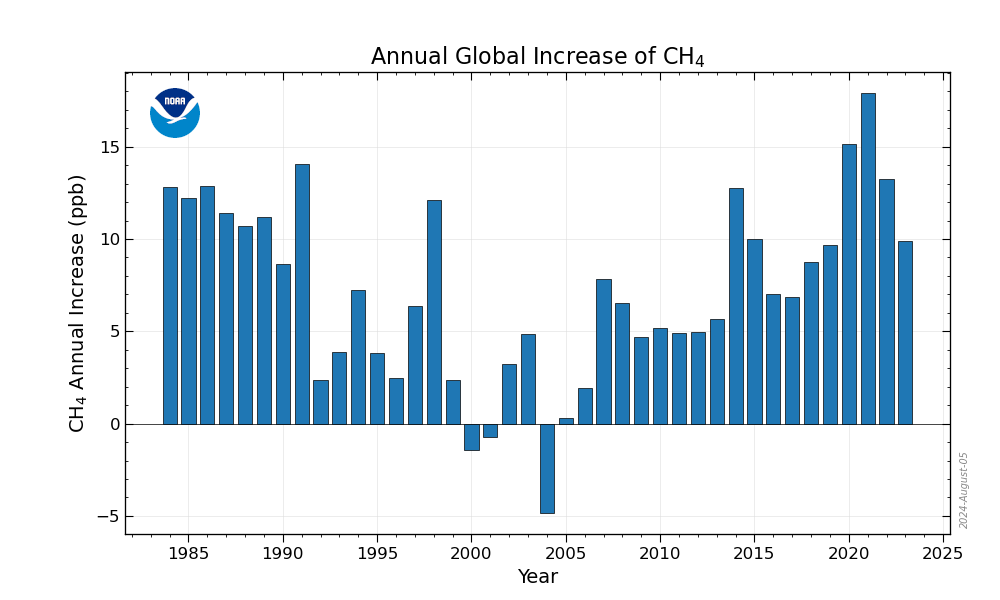
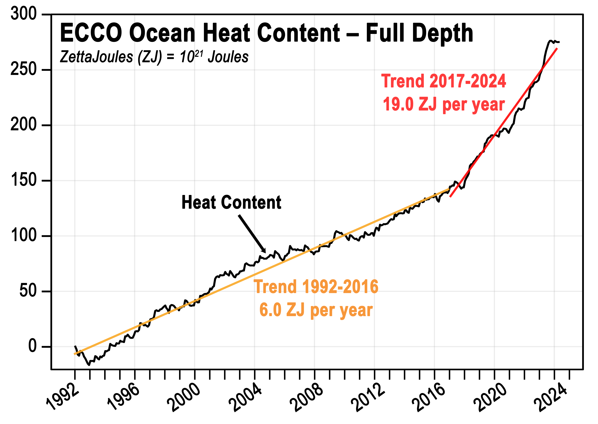

Article
In the far corners of the planet, where nature has dwelled in tranquility for thousands of years, subtle signs of unseen
change have begun to emerge. A faint warmth slips through the breezes, whispering of a dark secret swirling deep within
the atmosphere. They say the Earth is reshaping itself, and without realizing it, humanity stands on the edge of a
mysterious transformation that will alter the face of the future. Behind the curtain, a force is gathering, leaving its
mark in the rising oceans and silently melting ice. What is truly happening? Is it a call from nature, or are we facing
a mystery of our own making? Amidst this enigma, there is one force igniting the spark of change..."global warming"
1-What is global warming?
Let's start by defining what global warming is.
Global warming is the gradual increase in Earth's temperature
due to the
accumulation of greenhouse gases in the atmosphere.
These gases, such as carbon dioxide, methane, and nitrous oxide,
trap heat from the sun and prevent it from radiating back into space,
leading to an increase in sea surface
temperatures.
2-How does global warming occur?
Let me take your thoughts a bit deeper to explain how this natural phenomenon happens. Typically, global warming occurs
due to the accumulation of greenhouse gases in the atmosphere, such as carbon dioxide, methane, and nitrous oxide. These
gases trap heat that comes from the sun. Here’s a simplified explanation: Solar energy reaches Earth as light and
infrared radiation. Some of this energy is absorbed by the Earth's surface, warming it, while the rest is reflected back
into space. Under normal conditions, the atmosphere allows some heat to escape into space. However, with the increased
accumulation of greenhouse gases due to human activities like burning fossil fuels,industries, and agriculture, more
heat is trapped, reducing the amount that escapes and causing the Earth's temperature to rise gradually. This rise leads
to widespread climatic changes, including ice melt, sea level rise, and more extreme weather events. While global
warming is a natural phenomenon, human activity has greatly intensified it, leading to the climate changes we face
today.
3-When did global warming begin?
Global warming began to increase significantly with the onset of the Industrial Revolution in the late 18th and early
19th centuries. During this period, the world experienced a substantial rise in the burning of fossil fuels, such as
coal, oil, and natural gas, to power factories, generate electricity, and drive transportation. Along with fossil fuel
combustion, there was also widespread deforestation for wood and construction, reducing nature’s ability to absorb
carbon dioxide. These industrial and human activities led to the release of large amounts of greenhouse gases into the
atmosphere, causing a gradual increase in global temperatures. According to scientists, carbon dioxide levels began to
rise markedly since the mid-19th century and increased more rapidly during the 20th century. Evidence suggests that the
post-World War II period saw a significant acceleration in emissions due to rapid economic growth and increased energy
demand, exacerbating the problem of global warming.
This led to the 2015 COP21 Climate Summit in Paris, where countries agreed to try to limit the average global
temperature rise to between 1.5 to 2.5 degrees Celsius. Unfortunately, this has not been achieved, and average
temperatures in 2023 have already exceeded two degrees. The primary goal now is not to return to the old average
increase but to manage the new climate change.
Human activity on the planet since the Industrial Revolution will undoubtedly lead us toward a real catastrophe with
irreversible damage due to what is known as greenhouse gas emissions. These gases can enter the atmosphere through
natural processes, but humans are the largest source, such as burning coal, gas, and oil, which we need for generating
energy for factories, cars, and airplanes. This contributes to significant methane emissions, which are 25 times more
potent than carbon dioxide.
Now you might be wondering what methane is, right?
Let me tell you a bit about it. Methane is a potent greenhouse gas. Although it is less abundant than carbon dioxide(CO₂), increases in methane concentrations in the atmosphere are responsible for about one-third of current climate
change, according to some estimates. Methane sources include both human activities and natural sources, such as managed
and unmanaged wetlands, wildfires, termites, and oceans. About 30% of total methane emissions each year come from
wetlands. Methane produced in wetlands has a noticeably lighter mass or isotopic variant compared to methane from fossil
fuel sources. An increased abundance of the lighter isotopic variant of methane in the atmosphere indicates that
wetlands are producing more methane as part of a feedback loop related to climate change, linked to warming and changes
in precipitation patterns.
Using the Lund-Potsdam-Jena (LPJ-DGVM) dynamic global vegetation model’s Earth Observation Simulator (LPJ-EOSIM)
version, global methane emissions from wetlands are estimated accurately at a 0.5 × 0.5-degree resolution. The model
estimates methane quantities released into the atmosphere by simulating wetland extent and using characteristics of
inundated areas, such as wetland soil moisture, temperature, and carbon content. The methane emission dataset from
wetlands using LPJ-EOSIM includes daily and monthly global model estimates of methane emissions from wetlands from 1990
to the present, with data updated every two months. Monthly datasets are calculated by aggregating daily data for each
month. The estimates are regularly used in conjunction with NASA's Goddard Earth Observing System (GEOS) model to
simulate the impact of wetlands and other methane sources on atmospheric methane concentrations, to compare with
satellite and aircraft data, and to improve understanding and prediction of wetland emissions. This new version replaces
the previously available LPJ-wsl dataset at the Greenhouse Gas Center. Wetland methane emissions (CH₄) are estimated to
be the largest natural source of methane in the global methane budget, contributing about one-third of total natural and
anthropogenic emissions. Wetland methane is produced by microbes that break down organic material in anoxic,
water-saturated soil environments. Due to limited data, the role of wetland methane emissions has not been adequately
represented so far.
Global Methane Budget (2008–2017)

The global methane budget, as shown in the chart from Saunois et al. (2020),
illustrates the various processes
contributing to methane emissions and their respective contributions:
Sources:
1- Human-related (Orange Arrows): Includes emissions from activities related to fossil fuels, agriculture, waste
management, and biomass burning.
2- Natural (Green Arrows): Primarily from wetlands and freshwater bodies.
Loss Processes:
3- Major Methane Loss Processes: Indicated by downward arrows, showing how methane is removed from the atmosphere through
processes like oxidation.
"This data highlights the contributions of various sources to the overall methane budget, emphasizing the importance of
addressing both natural and anthropogenic emissions. By refining these estimates, the CMS-Flux team provides valuable
insights that support global efforts to effectively manage and mitigate methane emissions. Notably, this data aids in
understanding the primary sources of methane, their distribution, and their impacts on the climate, thus serving as a
foundation for developing effective strategies to mitigate methane emissions."
The Sudden and Sustained Rise in Atmospheric Methane Levels
1-Key Questions
Since 2007, atmospheric methane levels—a potent greenhouse gas—have shown a noticeable and sustained increase, raising
one of the biggest and most urgent questions in climate research: Where is this gas coming from? Is it from fossil fuel
emissions? Biological sources? A decline in the atmosphere's ability to break down methane? Or a climate tipping point?
2-Scientific Investigation
A research group led by Shane L. Lang, a scientist at the Cooperative Institute for Research in Environmental Sciences
(CIRES) at the National Oceanic and Atmospheric Administration (NOAA) Earth System Research Laboratory, tested leading
theories about the rise in methane levels by analyzing stable carbon isotope ratios (δ¹³C-CH₄) of methane captured from
a large array of global air samples to assess the validity of each theory.
"Their paper was published in the journal Global Biogeochemical Cycles."
3-Key Findings
The data indicated that microbial sources, such as natural wetlands, shallow lakes, rivers, and human-managed sources
like livestock, landfills, rice paddies, and wastewater treatment, are the primary contributors to the increase in
methane levels after 2006. Lang explained that "the analysis suggests that fossil fuel methane emissions are unlikely to
be the primary cause of the increase after 2006." He added that "the long-term change cannot be explained by a reduction
in the atmospheric methane degradation rate either."
Methane Emissions and EMIT Monitoring
Methane (CH₄) is a potent greenhouse gas that is invisible to the human eye and has a significant impact on global
warming. Large methane emissions, often referred to as emissions from "petroleum sources," represent a substantial
portion of the total methane emissions from sources such as oil and gas production, transportation, and processing, as
well as from landfills and other sources.
1-The Role of EMIT in Methane Monitoring
The Earth Surface Mineral Dust Source Investigation (EMIT) instrument, located on the International Space Station (ISS),
plays a crucial role in monitoring methane emissions. EMIT measures the distinctive spectral fingerprint of methane in
the atmosphere, allowing it to map areas with high methane concentrations and identify emission hotspots. By detecting
these plumes and analyzing their spectral properties, EMIT provides valuable data on methane enhancement
2-Overview of the Dataset
The dataset includes measurements of methane emission hotspots as detected by EMIT, with data covering the spatial
extent and timeframe of the observations made by the instrument. However, it is important to note that EMIT does not
cover every location on Earth. Consequently, methane plumes are derived only for areas within EMIT's observational
range.
EMIT Measures Methane's Spectral Fingerprint
Launched on July 14, 2022, EMIT is currently operating on the International Space Station (ISS). It offers broad
coverage with an 80 km swath and spatial resolution of 60 meters, providing daily coverage equivalent to the area of
Texas. EMIT is a NASA mission, and all data and algorithms are publicly available as part of NASA's commitment to open
science. This openness allows anyone to test, improve, and refine the data, algorithms, and results.
Methane Emission Sources
Relative to carbon dioxide, methane is estimated to be 86 times more effective at trapping heat in the atmosphere over
the first 20 years after its emission (Myhre et al., 2013). While CO₂ remains in the atmosphere for centuries, methane
lasts about a decade. Methane is a flammable, invisible gas, and natural gas in the U.S. contains about 95% methane. Due
to its extensive use in heating and cooking, natural gas distribution systems are widespread in cities and towns. Most
methane emissions come from the waste sector (landfills, wastewater treatment) and agriculture (livestock, rice
cultivation), but methane is also released during coal extraction and oil and gas production and transportation.
Mitigation Activities
Methane emissions can be reduced through activities like leak detection and repair. Burning methane, by flaring,
produces CO₂, which is also a greenhouse gas but has a lower climate impact than methane. Increasingly, industries like
landfills and wastewater management are capturing and burning methane either to generate electricity or prevent its
release into the atmosphere. This practice can also reduce toxic gases like benzene often found with methane.

A stacked line graph showing the amount of methane emitted into the atmosphere from different
sectors annually from 1990
to 2020 in the United States. The data is aggregated from the website
epa.gov/ghgemissions/inventory-us-greenhouse-gas-emissions-and-sinks-1990-2020, using data from Table Appendix 2022,
Tables 2-2.
-Alright, dear reader, I believe you’ve delved into some in-depth information about methane in general and
scientifically to understand how its increase in the atmosphere poses a threat to the planet. Now, let me shift your
focus to carbon dioxide to address it in our topic as well :
The Role of Carbon in the Earth System
The movement of carbon between the land, oceans, and atmosphere is fundamental to how the Earth functions. Carbon
dioxide (CO₂) and methane (CH₄) play a critical role in regulating global temperatures by absorbing infrared radiation.
On land, carbon acts as a common currency among plants, microbes, and the atmosphere. Through the process of
photosynthesis, plants remove CO₂ from the air to support their growth. When plants die or shed their leaves, microbes
in the soil return a significant portion of this CO₂ to the atmosphere through respiration. In waterlogged, anaerobic
soils, microbes known as methanogens produce and release methane (CH₄) instead of CO₂. Similar processes occur in the
oceans, except that atmospheric CO₂ first dissolves in the ocean's surface before being used in photosynthesis by
microscopic plants called phytoplankton. The rate and balance of the carbon cycle between land, oceans, and the
atmosphere are influenced by the Earth's climate, which includes environmental changes and changes driven by global
warming.
This animation compiles information from NASA models and data presented on the U.S. GHG Center to track the effects on
atmospheric carbon dioxide throughout the year. It displays global views of the impact of fossil fuel emissions, fires,
and land and ocean sinks on the surface using different colors. The waterfall chart illustrates the global estimates of
contributions from major sources and sinks and shows how their balance changes with the seasons. By the end of the year,
land and oceans have absorbed nearly half of the carbon dioxide emissions.
Natural Sources and Sinks of Carbon Dioxide
The land and oceans currently absorb about 5 billion metric tons of carbon each year from the atmosphere. This amount of
carbon is roughly equivalent to half of the annual carbon dioxide emissions from burning coal, oil, and gas, and from
cement production. These figures underscore the importance of these natural sinks, as without them, atmospheric carbon
dioxide concentrations could rise twice as fast, accelerating global warming.
On land, several factors enable plants to absorb more carbon than they release. When forests regrow, as is happening in
most of the Northern Hemisphere, younger trees absorb more carbon through photosynthesis. Forests are currently
regrowing across the Northern Hemisphere because most deforestation and carbon dioxide emissions occurred about 100-150
years ago, so new growth in these areas is, in some respects, a form of recovery. In some of these regions, rapid
warming in high latitudes also extends the growing season. Additionally, increased atmospheric carbon dioxide
concentrations can stimulate more photosynthesis.
In the ocean, carbon absorption is controlled by a range of physical and biogeochemical processes. Carbon uptake in
surface waters tends to increase with higher atmospheric concentrations, but this can be influenced by changes in ocean
temperature and circulation.
Primary Energy and Carbon
In 2023, global primary energy consumption reached a record high for the second consecutive year, growing by 2% to 620
exajoules (EJ). This growth rate was 0.6% higher than the average over the past decade and more than 5% higher than the
level in 2019 before the COVID-19 pandemic. While fossil fuel consumption set a new record in absolute terms, its share
decreased to 81.5% in 2023 compared to about 81.9% in 2022.
The demand for natural gas, a relatively low-carbon fossil fuel, remained steady. However, the increase in the use of
more carbon-intensive oil and coal led to greenhouse gas emissions related to energy reaching a new record level,
exceeding 40 gigatons of CO₂ equivalent (GtCO₂e) for the first time. CO₂ emissions from fossil fuel combustion are the
largest source of energy-related greenhouse gas emissions, accounting for about 87% of the total.
Looking back, dear reader, at the period from the Industrial Revolution (1850) to 1960, you will notice a significant
increase in greenhouse gas emissions. This increase was driven by industrialization, and naturally, such a trend was
evident in America. Since then, there has been no reduction in emission levels, with only historical events affecting
the industry, such as the Great Depression of the 1930s and World War II. Emissions began to rise again in the 1950s
with the substantial economic growth in North America, driven by the expansion of unconventional oil and gas production
that began in the early 2000s. As a result, the region transitioned from being a net energy importer to a net exporter
over the past decade. In 2023, North America's oil production exceeded domestic consumption by 16%, while gas production
was 14% above demand levels.
Since the 1980s, Europe has consistently been a net energy importer. In 2023, its largest deficit was in oil, with
production covering only 23% of demand. Gas production in Europe met only 44% of consumption, while coal production
covered 58% of demand, showing a less severe imbalance.
The Asia-Pacific region had the highest demand of any region in 2023, consuming 292 exajoules of primary energy, or 47%
of the global total. Like Europe, this region has been a net energy importer since the 1980s. In 2023, its largest
shortfall was in meeting oil demand, with production covering only about 19% of consumption. The gas situation was more
positive, with production meeting 74% of demand. For coal, the Asia-Pacific region achieved a surplus in 2023, with
supply exceeding demand by 5%.
In 2005, China became the world’s largest emitter of greenhouse gases. At that time, carbon emissions were approximately
90% of what they were 59 years ago, with around 80% of these emissions resulting from fossil fuel combustion, primarily
for industrial purposes.
4-Effects of Rising Temperatures
In 2011, carbon dioxide emissions were 150 times higher than in 1850, illustrating a significant increase in just 150
years. By 2022, global CO₂ emissions related to energy reached 321 million tons. Following the COVID-19 pandemic and the
resumption of global commercial activity, emissions increased by 6.4% over the past year, hitting new record levels
higher than before the pandemic.
According to the World Resources Simulation Center, global temperatures are expected to rise by more than 1.5°C before
2050. If emissions continue at current levels, temperatures could rise by 2°C by early 2040, 3°C by 2060, and 4°C by
2080. While these changes may seem minor, they will significantly impact summer conditions, potentially leading to
longer and hotter summer months beyond current tolerances. A 2°C increase could result in extreme heatwaves lasting up
to 53 days in 2040, possibly causing hurricanes. Research from 2012 suggests that global warming could trigger numerous
tropical cyclones, leading to severe future disasters and significant losses, including potential homelessness.
The Middle East and North Africa, which heavily rely on agriculture, could face severe droughts if temperatures rise.
According to World Resources Simulation Center scenarios, a 3°C increase could lead to droughts lasting up to a month
and a half, while a 4°C rise could result in six-month droughts, severely impacting agriculture and causing losses in
both crops and livestock. Additionally, rising temperatures could contribute to the extinction of many species unable to
adapt.
Wildfires release significant amounts of CO₂ into the atmosphere. The 2020 Australian fires notably reduced global land
carbon sinks. Heatwaves and droughts decrease plant productivity in tropical and temperate ecosystems, potentially
reducing carbon sinks despite some increases in local carbon absorption due to longer growing seasons or changes in
plant types. In the oceans, changing circulation patterns and marine heatwaves could weaken carbon absorption in key
areas such as the Southern Ocean. Changes in rainfall may also increase methane emissions from wetlands in parts of
South America and other tropical regions experiencing warming.
Australia's 2019-2020 wildfire season was unprecedented, destroying around 18.6 million hectares (186,000 square
kilometers), burning over 5,000 buildings, and killing more than 400 people. Over a billion animals perished, and many
endangered species faced extinction. New research published in Nature found that these fires released about 700 million
tons of CO₂, more than double previous estimates. The intense fires affected up to 74,000 square kilometers of
eucalyptus forests, about 2.5 times the size of Belgium. Initial estimates based on satellite data suggested that fires
released about 275 million tons of CO₂ from November 2019 to January 2020, but new analyses using the Tropomi instrument
on the Copernicus Sentinel-5P satellite provided more accurate figures.
Evaporation, Transpiration, and the Colorado River
One significant impact of rising temperatures is the increase in evaporation and transpiration. These combined processes
transfer water from the Earth's surface to the atmosphere, contributing to reduced water levels in various water bodies.
For instance, the Colorado River, which flows through the southwestern United States and northwestern Mexico, is a
crucial water source for over 40 million people and 5 million acres of agricultural land. It feeds the largest water
reservoirs in the country—Lake Powell and Lake Mead.
Due to climate change, rising temperatures have increased evaporation rates and reduced snowpack in the Rockies, the
primary water source for the Colorado River. For every 1°C increase in temperature, water flow in the river decreases by
9.3%, equating to 1.5 billion tons of water.
Melting Ice and Rising Sea Levels
Melting ice at the poles presents a severe problem. The melting of ice not only disrupts the habitats of species like
polar bears but also contributes to rising sea levels. As ice melts and flows into oceans and seas, it raises sea
levels, potentially flooding coastal areas. For example, a 50 cm rise in sea level, expected with just a 1.5°C increase
in global temperatures, could cause extensive flooding. This could affect around 1.8 million people, including those in
countries like Morocco, and may increase the spread of diseases such as malaria, potentially impacting 20 to 34 million
people if temperatures rise by 3°C. so what if it becomes more? .
5-Where Does the Heat from Global Warming Go?
The oceans absorb more than 90% of the excess heat resulting from global warming. While we live in the atmosphere, not
the ocean, this "service" provided by the oceans is both significant and profound. The depth to which excess heat
penetrates the ocean is an important aspect to monitor. The ECCO model offers a unique capability to track warming
across the entire depth of the ocean, providing insights into how this heat affects the oceans and global climate
systems.
The ECCO (Estimating the Circulation and Climate of the Ocean) group provides valuable tools for measuring long-term
trends across different ocean depths. This includes surface layers of the ocean, extending down to 200 meters (650
feet), which have a direct impact on the atmosphere (and vice versa).
Through ECCO, we can also track trends throughout the full depth of the ocean, offering a comprehensive view of how
changes in ocean temperature affect the global climate system. This data is crucial for understanding how heat is
distributed in the oceans and how it might influence global weather and climate patterns.
6-Our Role in Addressing Global Warming
The COP28 event in the UAE aimed to unite countries in a shared plan to curb rising temperatures and address the
alarming trends before they become harder to manage. Key measures include leveraging renewable energy sources like wind
and solar to reduce reliance on fossil fuels and lower emissions. Some countries are also implementing higher taxes on
companies using fossil fuels to encourage a shift to greener alternatives.
Here is a set of innovative solutions to combat global warming, taking into account the cost and available capabilities:
1. Floating algae farms
Idea:Algae are capable of absorbing large amounts of carbon dioxide (CO2) and converting it into oxygen through the process
of photosynthesis. The idea of establishing floating algae farms in seas and oceans could be an innovative solution.
These farms can utilize nutrient-rich seawater and expand their reach at a lower cost. Additionally, algae serve as a
renewable source of biofuel, making the project multifaceted in its benefits.
How to Create: Required Resources:
Floating platforms (can be made from recycled or eco-friendly materials like recycled plastic or natural fibers).
Algae seeds or microalgae.
Pumps to supply water and nutrients to the algae, potentially powered by renewable energy sources such as solar panels.
Operation Mechanism:
Floating platforms are deployed on the ocean's surface in areas with active water currents to provide a continuous flow
of nutrients to the algae.
The algae absorb carbon dioxide through the process of photosynthesis and produce oxygen.
Algae can be harvested for use in the production of biofuels or organic fertilizers.
Economic Feasibility:
Moderate Cost: The initial cost of the floating platforms may be high, but the cost can be reduced by using recycled
materials.
Returns: Algae can be used to produce biofuels or food products, making the project profitable in the long term.
2.Solar Tiles for Electricity Generation
Idea: Instead of traditional solar panels, "solar tiles" can be used on building rooftops and streets. These tiles function as
nearly invisible solar panels, allowing for the utilization of large urban spaces to generate renewable energy without
the need for significant infrastructure changes. The cost of producing solar tiles decreases with technological
advancements, making them accessible to everyone in the near future.
How to Create: Required Resources:
Flexible solar cells or integrated cells within solid tile materials.
Traditional building materials such as clay or concrete for tile manufacturing.
Electronic equipment to convert and store the generated energy.
Operation Mechanism:
The tiles are manufactured using small solar cells embedded within the tiles themselves.
When installed on rooftops or sidewalks, the tiles absorb solar energy and convert it into electricity that can be used
to power homes or feed into the electrical grid.
Excess energy can be stored in batteries for later use.
Economic Feasibility:
High Initial Cost: Solar tiles are more expensive than traditional tiles, but costs may decrease with technological
advancements.
Long-Term Benefits: Once installed, operational costs are very low, allowing for savings on energy costs in the long
run.
3.Smart Buildings with Natural Cooling
Idea:Designing buildings that rely on natural cooling using techniques such as "thermal chimneys" or "vertical gardens" can
absorb heat and reduce the need for air conditioning. Such buildings provide energy savings and lower carbon emissions,
offering low-cost solutions in the long term by relying on smart design elements rather than complex technologies.
How to Create: Required Resources:
Structural design that takes into account wind direction and height to direct air currents.
Thermal chimneys (large ventilation openings) that assist in expelling hot air and replacing it with cool air.
Green plants, such as vertical gardens, to provide thermal insulation.
Operation Mechanism:
The building is designed to include ventilation openings and thermal chimneys that facilitate the circulation of hot air
and its expulsion.
Plants integrated into the walls and roofs help lower temperatures and cool the air.
This technique reduces the need for air conditioning, thereby lowering energy consumption.
Economic Feasibility:
Low to Moderate Cost: Dependent on the structural design and technologies used.
Significant Long-Term Returns: Substantial savings on cooling energy costs.
4.Heat-Reflective Methods
Idea:Coating roads and public pathways with heat-reflective materials, such as reflective white paint or new modified
materials, can significantly reduce the "urban heat island" effect, where dark surfaces contribute to rising
temperatures in cities. Additionally, this solution can lower the energy consumption associated with air conditioning.
How to Create: Required Resources:
Heat-reflective materials such as special white paint, white gravel, or cool asphalt.
Equipment for applying paint or constructing reflective roads.
Operation Mechanism:
Cover roads and exposed surfaces in cities with reflective materials to minimize heat absorption from the sun.
Reflective surfaces reduce the impact of the "urban heat island" effect, leading to lower overall temperatures in urban
areas.
Economic Feasibility:
Low to Moderate Cost: Painting roads or using reflective materials is not overly expensive.
Significant Energy Savings: Lowering temperatures reduces electricity consumption for air conditioning.
5.Utilizing Ocean Thermal Energy
Idea: Convert thermal energy from the oceans into electricity using a technique known as "Ocean Thermal Energy
Conversion" (OTEC).
How to Create: Required Resources:
Heat exchangers to extract energy from the temperature difference between the surface and deep layers of the ocean.
Turbines to convert thermal energy into electricity.
Operation Mechanism:
The difference in temperature between the warm surface layers of the ocean and the cold deep layers is used to move
fluids in closed-loop systems, generating electricity through turbines.
This technology is environmentally friendly and provides a sustainable energy source.
Economic Feasibility:
High Initial Cost: This technology requires significant investments in infrastructure.
Sustainable Benefits: Once constructed, electricity can be produced sustainably and at a low cost.
7-Exploring the role of greenhouse gases in my region and on a global level as well
Let’s first talk about some specific impacts on certain continents around the world:
Africa:
Drought: Africa is considered one of the continents most affected by climate change due to rising temperatures anddrought, which severely impacts agriculture and food production.
Desertification: Africa suffers from desertification, leading to the loss of arable land, a decline in vegetation cover,
and biodiversity.
Conflicts: Climate change affects conflicts in Africa, as limited resources such as water and land become scarcer,
exacerbating disputes and conflicts.
Asia:
Rising Sea Levels: Southeast Asian countries and Pacific nations are experiencing rising sea levels, threatening toinundate extensive coastal areas, leading to loss of land, agriculture, and economic activity in these regions.
Natural Disasters: Asia is witnessing an increase in the size and frequency of natural disasters such as storms and
floods, resulting in significant losses of life, infrastructure, and economic stability.
Pollution: Some Asian countries face air and water pollution issues due to industrial activities and fossil fuel usage,
which exacerbate the effects of climate change.
Europe:
Heat Waves: Europe is experiencing continuous and severe heat waves that affect public health, cause fatalities,threaten wildfires, and exacerbate drought conditions.
Flooding: Europe is facing flooding due to rising sea levels and changing weather patterns, leading to significant
economic and infrastructure losses.
Displacement: Climate change impacts displacement in Europe, forcing many people to leave their home areas due to
drought, flooding, and severe weather phenomena, complicating social and humanitarian issues.
North America:
Wildfires: North America faces wildfires that threaten the environment, health, and biodiversity, and exacerbate climatechange due to greenhouse gas emissions from these fires.
Drought: Some areas in North America are experiencing drought, affecting agriculture and food production and
exacerbating water scarcity issues.
Storms: North America is seeing an increase in the size and frequency of storms and floods, causing significant economic
losses and threatening to inundate coastal areas.
South America:
Flooding: South America is suffering from flooding due to heavy rainfall and rising sea levels, threatening land loss,destroying infrastructure, and impacting the economy.
Drought: Some regions in South America are experiencing drought, affecting agriculture and food production and
exacerbating water scarcity.
Biodiversity: Climate change threatens biodiversity in South America due to habitat loss and the extinction of certain
animal and plant species.
Global warming poses a significant challenge to the world and threatens serious risks to various aspects of life across
different regions.
Regarding the population areas suffering from global warming, there are many, and they span different parts of the world; however, some are more affected than others due to factors such as:
Geographic Location: Areas near the equator are significantly affected by global warming, experiencing substantialincreases in temperatures, leading to more evaporation and rising sea levels.
Elevation: Low-lying and flat areas are at risk of flooding, while elevated areas may face water scarcity and increased
heat waves.
Proximity to Oceans: Climate change affects ocean currents, leading to changes in weather patterns in coastal areas,
potentially resulting in more intense storms.
Dependence on Agriculture: Many regions rely on agriculture as a primary livelihood, and climate change may lead to
reduced crop yields and negatively impact food security.
Some of the most affected areas by global warming include:
Pacific Islands: Pacific islands are experiencing significant sea-level rise, threatening their existence entirely.Bangladesh: Bangladesh is one of the most vulnerable countries to rising sea levels, with a large portion of its
population living in low-lying areas.
Africa: Africa is facing intensified drought, desertification, and heat waves that impact agriculture, food security,
and wildlife.
Latin America: Latin America is at risk of flooding and landslides attributed to climate change.
Detailed Examples:
Maldives: Rising sea levels threaten the existence of these islands, known for their natural beauty and white sands.North Sea: Rising water temperatures threaten large populations of marine life in the North Sea, impacting food chains
and biodiversity.
Amazon Rainforest: Desertification and changes in rainfall patterns threaten the Amazon rainforest, known as the "lungs
of the world," playing a vital role in climate regulation.
Himalayan Mountains: The melting of glaciers in the Himalayas threatens water sources for millions of people in South
Asia.
Extreme Weather Phenomena:
The intensity of extreme weather phenomena such as storms, floods, droughts, and heat wavesis increasing, affecting human health, damaging infrastructure, and leading to economic losses. For instance, New York
City is one of the cities facing rising sea levels, threatening to inundate vast areas of the city over time.
Water Scarcity:
Global warming impacts the water cycle, leading to increased scarcity of drinking water and waternecessary for agriculture. For example, California is facing ongoing droughts that threaten economic and social damage
in the state.
Changes in Ecosystems:
Global warming affects ecosystems of various types, from forests to oceans, leading tobiodiversity loss and the risk of species extinction. For example, global warming threatens coral reefs worldwide, which
are suffering from bleaching and degradation due to rising water temperatures.
Forced Displacement:
Climate changes are forcing many people to leave their home areas due to floods, droughts, andextreme weather phenomena, leading to complex social and humanitarian issues. For example, desert areas in Africa are
among the most threatened by desertification, forcing residents to migrate to other areas in search of water and food.
Economic Growth:
Global warming affects economic growth in various sectors, including agriculture, industry, and trade,which are suffering from losses and changes in supply and demand. For instance, Southeast Asian countries are
experiencing the impact of rising sea levels on economic activities in coastal areas that rely on fishing, trade, and
ports.
Public Health:
Global warming negatively impacts public health, leading to increased mortality from heat, pollution, andchanges in the patterns of infectious diseases. For example, some countries are facing new epidemics or broader
outbreaks of infectious diseases that spread due to climate changes and shifts in disease patterns.
Global warming poses a significant challenge to the world, threatening serious risks to various aspects of life,
including the environment, economy, development, and health. It is a global challenge that affects all peoples and
requires international cooperation and commitment to reducing emissions and transforming consumption and development
patterns.